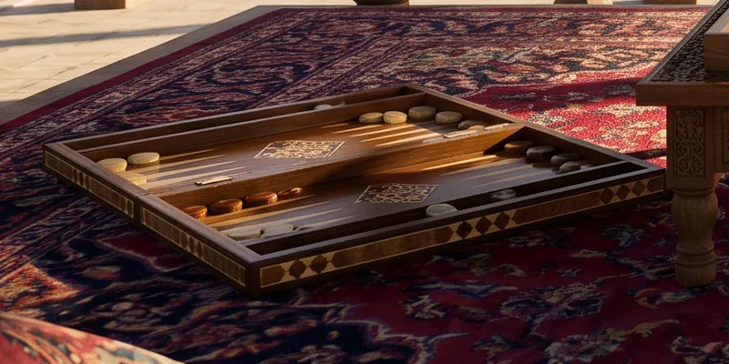

Nard, Bozorgmehr’s answer
The game of dice and checkers that Persian tradition calls a sage’s reply to Indian chess.

The Persian word nard is short for Middle Persian new-Ardashir, “brave Ardashir”, after the founder of the Sasanian dynasty. The name ties the game to the Persian court long before Islam.
The legend
The Middle Persian tale Chatrang-namag, written down between the seventh and ninth centuries, tells how an Indian king sent chess to Khosrow Anushirvan and demanded that its rules be worked out. The sage Bozorgmehr solved it, then invented a game of his own, nard, and sent it to India, where no one could solve it. Around the year 1000 Ferdowsi retold the story in the Shahnameh.
The tale gives the game a meaning: the board is the world, the checkers are days and nights, the fall of the dice is the turning of the heavens. In this pairing chess became the game of reckoning and nard the game of fate, which one must still handle wisely.
How we play
The sources do not say exactly how nard was played under Timur; the early rules, nardshir, are known only through reconstructions. We play the way Iran plays takhte nard today, which matches classical backgammon without the doubling cube. A lone checker can be hit, a hit checker comes back in from the bar, and winning before the opponent has borne off a single checker is a mars, which counts double.
Russia and the Caucasus more often play long nardy, with no hitting and all checkers starting on one “head”. It is a later branch of the same family.
Sources
- Wikipedia: Nard (game)
- Iain Gardner, “Backgammon and cosmology at the Sasanian court”, Bulletin of SOAS 83/2 (2020)
- Ferdowsi, Shahnameh: The Persian Book of Kings, tr. Dick Davis (Penguin, 2007), pp. 701–704
- Wikipedia: Middle Persian literature (Chatrang-namag)